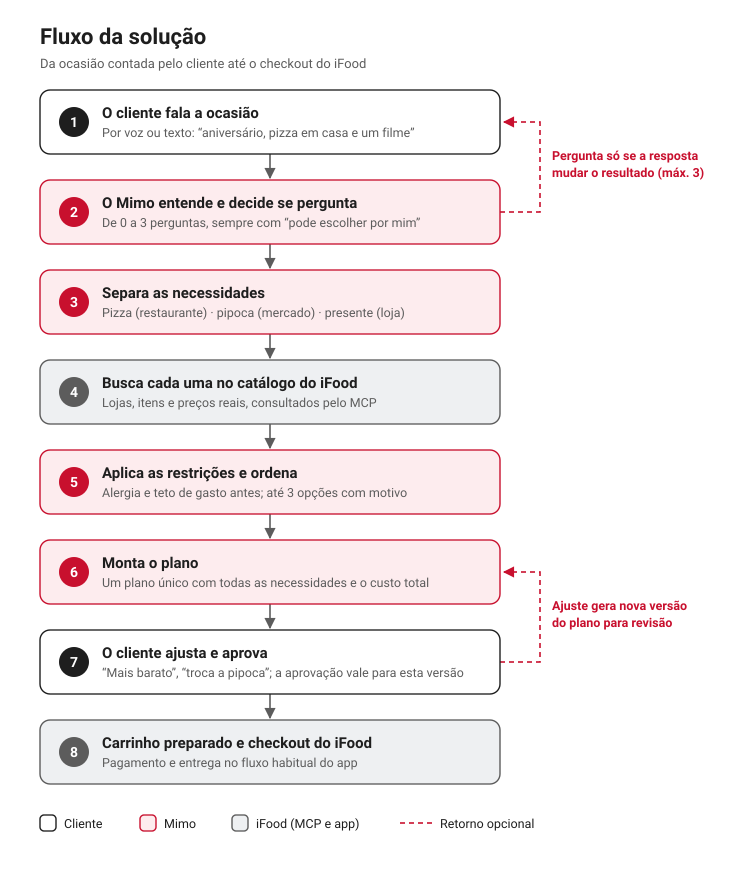

O Mimo é um agente conversacional do iFood, operado por voz, que organiza a compra de uma ocasião completa dentro do aplicativo. A partir de uma descrição em linguagem natural, o agente identifica as necessidades envolvidas, busca no catálogo do iFood, em diferentes verticais, opções justificadas para cada uma e consolida um plano único para aprovação do cliente. A finalização segue o checkout já existente do iFood. Para o negócio, o Mimo converte intenções amplas em pedidos que combinam verticais e gera sinais estruturados sobre o que o cliente procura.
A decisão de compra em aplicativos de entrega costuma partir de uma ocasião, e não de um produto isolado. Um aniversário em casa, por exemplo, pode envolver uma refeição de restaurante, itens de mercado e um presente. Hoje, o cliente do iFood precisa traduzir essa situação em buscas independentes por vertical, comparar um volume grande de opções em cada uma e reaplicar a cada etapa as mesmas condições: orçamento, número de pessoas e restrições alimentares.
Esse percurso concentra três dificuldades: indecisão diante do excesso de alternativas, esforço elevado entre a intenção e a escolha, e recomendações que desconsideram o contexto do momento. A oportunidade para o iFood está em converter a descrição da ocasião diretamente em uma proposta de compra organizada, capturando pedidos que hoje se perdem no caminho ou ficam restritos a uma única vertical. A frequência e a intensidade dessas dificuldades na base de clientes ainda não foram medidas pela equipe.
Para orientar o desenho e os testes, a equipe considera cinco perfis de cliente, que podem coexistir na mesma pessoa: clientes com pouco tempo, clientes orientados a orçamento, indecisos, clientes em busca de variedade e pessoas com restrição alimentar. O valor do Mimo é maior em compras associadas a um contexto, como celebrações, encontros e refeições em grupo, e em situações em que o cliente ainda não tem uma escolha definida.
Para o cliente, a proposta é transformar a descrição de uma ocasião em um plano de compra pronto para revisão. O plano apresenta até três opções por necessidade, cada uma acompanhada da justificativa extraída de dados reais do catálogo. O cliente mantém controle integral: ajusta itens, aprova o plano e conclui a compra no fluxo habitual do aplicativo.
Para o iFood, o Mimo é um novo ponto de entrada para pedidos que combinam verticais e uma fonte de informação qualificada sobre a intenção do cliente: motivos de rejeição de opções, demandas sem cobertura no catálogo e combinações recorrentes de categorias por ocasião. Esses benefícios são hipóteses a validar.
A interação ocorre preferencialmente por voz, com entrada por texto sempre disponível. O agente interpreta a ocasião, separa as necessidades, busca cada uma no catálogo, ordena as opções e apresenta um plano consolidado.
Equilíbrio entre entender e avançar. O Mimo não conduz um questionário. Cada pergunta precisa justificar o seu lugar: o agente só pergunta quando a resposta muda o resultado e, sempre que possível, assume um padrão razoável e informa qual assumiu. Pedidos específicos ou sinais de pressa recebem uma proposta imediata, sem perguntas. Uma lacuna relevante gera uma única pergunta. Ocasiões vagas admitem no máximo três, feitas uma de cada vez e sempre com a opção de delegar a escolha ao agente. O objetivo é conhecer a realidade do cliente o suficiente para acertar a recomendação, sem prolongar a jornada nem atrasar a compra.
Cenário de referênciaClienteHoje é aniversário de um amigo. Vamos comer pizza em casa e ver um filme.
MimoÓtimo. Para quantas pessoas, aproximadamente?
ClienteSeis.
MimoEntão: pizza para seis, pipoca para o filme e um presente. Posso considerar um presente de até R$ 100?
ClientePode.
MimoO plano está pronto, com pizza, pipoca e presente e o motivo de cada escolha. Deseja ajustar algum item?
Restrições como alergias e teto de gasto são aplicadas antes da ordenação das opções. Custos e regras são calculados por código determinístico; o modelo de linguagem é responsável apenas pela interpretação e pela conversa. Nenhum item é adicionado ao carrinho sem a aprovação explícita da versão vigente do plano, e qualquer alteração relevante exige nova revisão. O agente não paga nem fecha pedidos: essa etapa permanece com o cliente, no checkout do iFood.
Contexto obtido pela fala. A conversa captura informações que filtros de interface dificilmente registram, como a natureza da ocasião, o número de pessoas, o orçamento por item e o que deve ser evitado. Esse contexto é estruturado e utilizado para ordenar e justificar as opções.
Sinais estruturados para o iFood. Cada interação produz eventos anônimos sobre aceitação, rejeição e demanda não atendida, que podem ser agregados mediante consentimento e usados para melhorar catálogo e recomendações.
Confiabilidade por desenho. As justificativas derivam exclusivamente de campos reais do catálogo, informações estimadas são identificadas, e toda ação no carrinho depende de aprovação do cliente.
Canal e relacionamento. O Mimo é acessado a partir da página inicial do aplicativo do iFood, como uma entrada adicional ao lado da busca tradicional. O relacionamento se apoia em transparência e controle: as justificativas são visíveis, as preferências só são armazenadas com consentimento, e o cliente pode consultá-las, corrigi-las e excluí-las. O feedback é coletado de forma implícita, a partir das ações do cliente, sem formulários.
Impacto no negócio. O recurso não tem cobrança adicional para o cliente. O retorno para o iFood vem de ocasiões resolvidas que se convertem em pedidos, frequentemente em mais de uma vertical, com possível aumento de conversão, satisfação, retenção e recompra. Para restaurantes, mercados e lojas parceiros, o benefício esperado é a descoberta por clientes com intenção compatível. Os sinais agregados sobre demanda não atendida podem orientar a expansão do catálogo. Nenhum desses efeitos foi medido.
Custos. Os principais custos variáveis são o modelo de linguagem, cobrado por interação, e os serviços de reconhecimento e síntese de voz; somam-se hospedagem e armazenamento de eventos. Frases recorrentes são pré-geradas para reduzir chamadas aos serviços de voz, e custo e latência são monitorados por sessão.
Os benefícios descritos neste documento são hipóteses a validar; nenhum indicador de impacto foi observado até esta versão.
O diagrama abaixo mostra como o Mimo resolve uma ocasião, da descrição feita pelo cliente até o checkout do iFood, e quem responde por cada etapa.

A experiência do Mimo foi desenhada em torno de dois objetivos: fluidez, para que a conversa avance sem travar nem cansar, e clareza, para que o cliente saiba a todo momento o que o agente está fazendo, por que sugeriu cada opção e o que acontece ao aprovar. As decisões a seguir explicam como cada objetivo se traduz na interação.
Voz como entrada principal, texto sempre disponível. Falar é a forma mais natural de descrever uma ocasião e traz mais contexto do que filtros de tela. O texto permanece disponível o tempo todo, para ambientes barulhentos, microfone indisponível ou simples preferência, e a conversa continua do ponto em que estava ao alternar entre os dois.
Equilíbrio entre perguntar e avançar. O Mimo não conduz um questionário. São no máximo três perguntas por sessão, feitas uma de cada vez e apenas quando a resposta altera o resultado. Toda pergunta vem acompanhada da opção “pode escolher por mim”, e sinais de pressa, como respostas curtas ou “tanto faz”, reduzem o número de perguntas. Quando falta um dado que não justifica uma pergunta, o agente assume um padrão razoável e informa qual assumiu.
Resposta sem silêncio. Assim que o cliente termina de falar, o Mimo sinaliza que está processando com uma frase curta, e o orbe muda de estado. O cliente pode interromper a qualquer momento, por voz, tecla ou digitação, sem precisar esperar o agente terminar.
Poucas opções, com motivo visível. Para cada necessidade, o Mimo apresenta até três opções, em vez de uma lista longa que reproduziria a indecisão da busca tradicional. Cada opção traz o motivo da recomendação, como preço, tempo de entrega ou avaliação, sempre extraído de dados reais do catálogo. Quando só existem uma ou duas opções adequadas, o agente não completa a lista por obrigação.
Um plano para a ocasião inteira. O resultado é apresentado como um plano único, com um bloco por necessidade (por exemplo, pizza, pipoca e presente) e o custo total consolidado. O cliente vê a ocasião resolvida em uma única tela, em vez de acompanhar três buscas separadas.
Ajuste por conversa. Pedidos como “mais barato” ou “troca a pipoca” alteram apenas o bloco correspondente e mantêm o restante do plano, preservando o contexto já informado.
Aprovação explícita. Nada é adicionado ao carrinho sem que o cliente aprove a versão apresentada do plano. Qualquer alteração relevante, de item ou de preço, gera uma nova versão e exige nova revisão, e o custo total é o elemento de maior destaque na tela de revisão.
Linguagem honesta sobre o estado da compra. Proposta, carrinho e pedido são etapas distintas e aparecem com rótulos distintos. O Mimo nunca afirma que um pedido foi realizado: ele prepara o carrinho, e a compra é concluída pelo cliente no checkout do iFood.
Transparência sobre os dados. Valores estimados ou ainda não confirmados aparecem identificados como tal, e um total só é apresentado como confirmado quando todos os seus componentes são conhecidos.
Continuidade com o aplicativo. O Mimo é acessado por um botão na página inicial do iFood e segue a linguagem visual do aplicativo, para que o cliente não precise aprender uma interface nova. A lista de opções reproduz o padrão da busca do iFood, com logo da loja, nota, tempo e frete, produto recomendado e preço.
Um orbe que comunica o estado do agente. O elemento central da tela do Mimo é um orbe animado que indica se o agente está ouvindo, pensando ou falando. A animação é desativada quando o sistema do cliente solicita movimento reduzido.
Uso contido da cor da marca. O vermelho do iFood é reservado para o orbe, bordas e ícones. Textos sobre fundo vermelho usam um tom mais escuro, que atende ao contraste mínimo de acessibilidade.
Estados difíceis com saída clara. Quando o microfone não está disponível, a interface indica isso sem parecer um erro e mantém o texto como alternativa. Quando nenhuma opção atende às condições, o Mimo explica o motivo e sugere um ajuste, como ampliar o orçamento. Falhas de conexão oferecem a opção de tentar novamente sem perder a conversa.
Privacidade por padrão. Preferências só são armazenadas com consentimento, e o cliente pode consultá-las, corrigi-las e excluí-las. O uso agregado dos dados para melhorar o serviço depende de um consentimento separado.
Acessibilidade. A interface atende ao contraste mínimo recomendado, pode ser navegada por teclado, e as falas do agente ficam disponíveis em texto para leitores de tela.